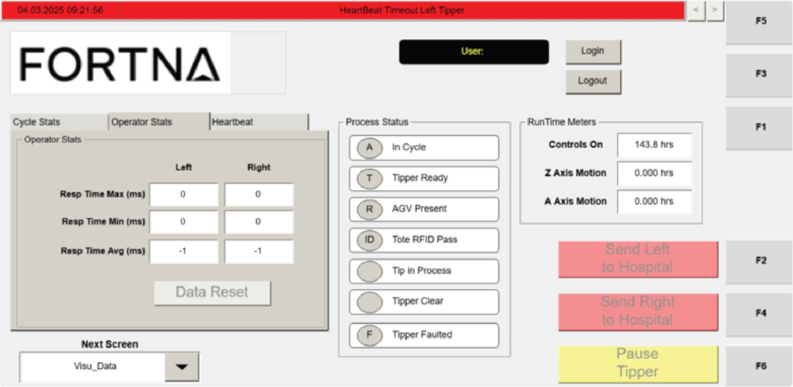
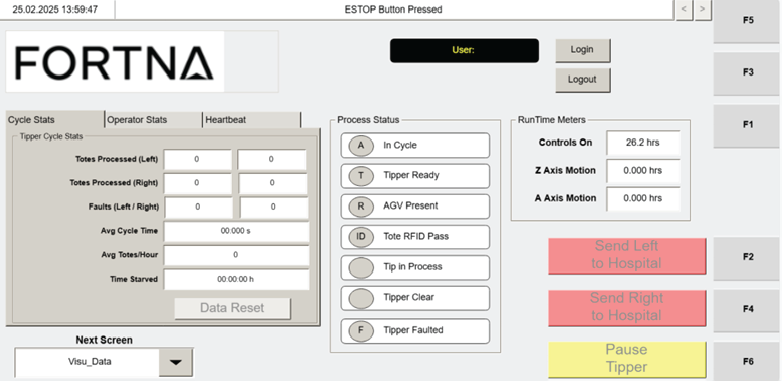

| Procedure ID | proc_interpret_operator_stats_on_the_visu_data_screen_v1 |
|---|---|
| Title | Interpret Operator Stats On The VISU_DATA Screen |
| Procedure Type | reference |
| Primary Role | operator |
| Support Safe | Yes |
| Validation Status | needs_sme_review |
| Merge Status | source_finalized |
Use the Operator Stats section on the VISU_DATA screen to identify and interpret Resp Time Max, Resp Time Min, and Resp Time Avg values in milliseconds for the left and right tippers.
Use this reference procedure when viewing the VISU_DATA screen to read operator response-time statistics for the left and right tippers and understand what each displayed metric represents.
Responsible role: operator
Instruction:
Open the VISU_DATA screen on the operator station HMI and locate the Operator Stats section.
Expected result:
The Operator Stats section is visible on the VISU_DATA screen.
Screens / Images:


Stop or Escalate If:
Responsible role: operator
Instruction:
Read the Resp Time Max (ms) fields and identify the longest time it took an operator to press the button to initiate tipping after the tote was gripped for the left and right tippers.
Expected result:
The maximum response-time values in milliseconds are identified for both the left and right tippers.
Screens / Images:
Stop or Escalate If:
Responsible role: operator
Instruction:
Read the Resp Time Min (ms) fields and identify the shortest time it took an operator to press the button to initiate tipping after the tote was gripped for the left and right tippers.
Expected result:
The minimum response-time values in milliseconds are identified for both the left and right tippers.
Screens / Images:
Stop or Escalate If:
Responsible role: operator
Instruction:
Read the Resp Time Avg (ms) fields and identify the average time it took an operator to press the button to initiate tipping after the tote was gripped for the left and right tippers.
Expected result:
The average response-time values in milliseconds are identified for both the left and right tippers.
Screens / Images:
Stop or Escalate If:
Responsible role: operator
Instruction:
Compare the left and right values if needed and record the displayed response-time metrics in milliseconds.
Expected result:
The displayed left and right Resp Time Max, Resp Time Min, and Resp Time Avg values are documented as shown on the HMI.
Screens / Images:
Stop or Escalate If: